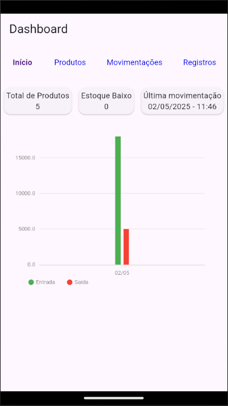
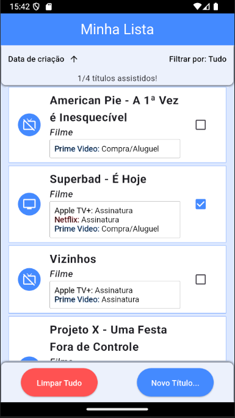
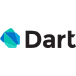
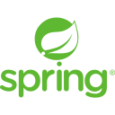
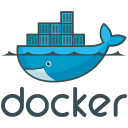

Stock Flow
Stock Flow é uma aplicação para gerenciamento de estoque, que permite o controle de movimentações de produtos, além de destacar produtos que estão com estoque baixo. Também gera relatórios em PDF.
Olá! Sou um desenvolvedor de sistemas formado em Análise e Desenvolvimento de Sistemas pela Uninassau, com um foco especial em Java para backend e Flutter para desenvolvimento mobile. Minha jornada acadêmica foi marcada por desafios e mudanças de rumo, que me ajudaram a amadurecer e a descobrir minha verdadeira paixão pela programação.
Inicialmente, eu estava inclinado a seguir uma carreira na área de exatas, com foco em Engenharia Civil. No entanto, ao passar em 7º lugar no SISU de 2019 para Matemática Aplicada e Computacional na UFS, decidi seguir a computação, embora tenha enfrentado um caminho difícil que incluiu a inscrição errada para Engenharia de Pesca e um ano complicado nesse curso. Em 2023, decidi focar completamente na área de tecnologia e me formei em 2024 em ADS.
Embora minha trajetória tenha sido mais longa do que eu esperava, ela me proporcionou a experiência de aprender por conta própria, me esforçando ao máximo para conquistar meus objetivos. Meu maior desafio foi no desenvolvimento de um e-commerce de roupas para um projeto acadêmico, onde, apesar da pressão do grupo e dos professores, tive a oportunidade de aprender muito, especialmente com a parte de backend em Java.
Hoje, estou em busca do meu primeiro emprego na área de programação, e enquanto não encontro a oportunidade certa, continuo aprimorando meus conhecimentos em Java e Flutter. Meu objetivo não é ser famoso, mas sim construir uma carreira sólida e consistente que me permita alcançar o sucesso tanto profissional quanto pessoal.
Sou um solucionador de problemas incansável: começo buscando soluções por conta própria, mas não hesito em recorrer a documentação, vídeos tutoriais ou até mesmo a ajuda de colegas quando necessário. Estou sempre em busca de novas tecnologias e tendências que posso aplicar nos meus projetos para aprimorar meu conhecimento e entregar resultados melhores.

Stock Flow é uma aplicação para gerenciamento de estoque, que permite o controle de movimentações de produtos, além de destacar produtos que estão com estoque baixo. Também gera relatórios em PDF.

Watch List+ é um aplicativo prático para gerenciar sua lista de produções audiovisuais. Com ele, você pode organizar filmes, séries e outros conteúdos de forma rápida e intuitiva.


JoKenPo simula o clássico jogo "Pedra, Papel e Tesoura", onde o usuário escolhe uma das opções e o JavaScript seleciona aleatoriamente outra.
Anota Aí é um aplicativo mobile simples para controle de despesas pessoais. Ele permite ao usuário realizar um CRUD, filtrar e ordenar suas despesas de forma intuitiva.
Goat Imports simula uma loja virtual de roupas e acessórios, onde usuários podem se cadastrar e realizar compras fictícias, oferecendo uma experiência básica de e-commerce.

Pede Já é um cardápio digital. Através de um QR Code exclusivo, o cliente acessa o cardápio e realiza pedidos diretamente pelo celular. O restaurante gerencia o cardápio e acompanha os pedidos.
